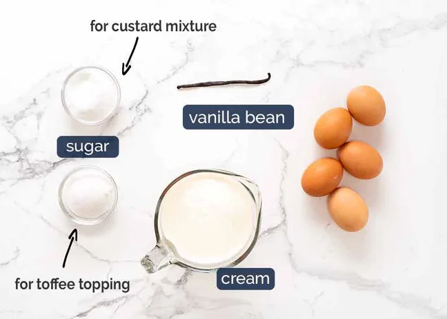

What Creme Brulee taste like
Crème brûlée tastes rich, creamy, and luxuriously smooth. The custard has a soft, silky texture that melts in your mouth, with a gentle sweetness and a warm vanilla flavour that feels elegant rather than heavy. It is not overly sweet, allowing the natural taste of cream and vanilla to stand out.
Ingredients for Creme Brulee
Cream creates the rich and smooth base of the custard, while vanilla bean, paste, or extract adds deep vanilla flavour. Sugar is used to sweeten the custard and to form the thin, crispy caramel topping on the surface. Egg yolks give crème brûlée its silky texture and help the custard set properly, while leftover egg whites can be saved and used in other recipes.
How to make CremeBrulee

To scrape the vanilla bean “caviar” (seeds) out, cut an incision down the length of the vanilla bean. Then use the back of a small knife held perpendicular against the vanilla bean and scrape it along the inside to scrape out the vanilla bean seeds.
Place vanilla seeds, empty vanilla bean pod and cream in a saucepan, and simmer over low heat for 10 minutes. Then leave to stand for 1 hour so the cream is infused with the vanilla flavour and cools.
Whisk egg yolks with the sugar.
Remove the vanilla bean from the cream (and have a giggle when you see what I use to remove it in the recipe video!) Use a slotted spoon or similar to remove any skin from the surface of the cream to ensure our custard is silky smooth.
Pour the cream into the egg mixture then whisk until just combined. Don't whisk more than necessary as this creates air bubbles. Though let's be honest, it's really not the end of the world if you have an air bubble or two in your custard!
This recipe makes 500ml / 2 cups of custard, so that's four servings of 125ml / ½ cup each. Small ramekins holding around 150ml / ⅔ cup are an ideal size - this is what I used.
Place ramekins in a deep(-ish) roasting pan, then fill the pan with boiling water so it comes halfway up the side of the ramekins. Don't go any higher than this otherwise the ramekins will float around in the water!
Bake 35 - 40 minutes or until the custard looks and feels set but still wobbles when you (gently!) shake the ramekin.
How to make the crisp toffee topping of Creme Brulee
blow torch makes short work of the crisp toffee topping. Just sprinkle with sugar and blast with the blow torch for around 6 to 10 seconds until the sugar melts and turns golden. It will then quickly harden as it cools. However, if you don't have a blow torch, just stick the ramekins under a screaming hot grill / broiler for around 45 seconds to 1 minute so the sugar melts. It works just fine, though my two little tips are: (1) the brûlée should be refrigerated overnight to ensure it is really cold to help prevent the custard from melting; and (2) after the sugar is melted, pop the Crème Brûlées back in the fridge for at least 20 minutes, and up to 1 hour. This is because the grill takes longer than a blow torch so the surface of the custard under the caramel will melt a little bit.